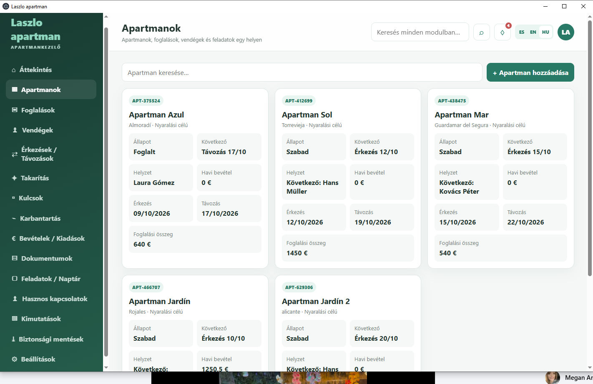

VÁLLALKOZÁSOKNAK
ELÉRHETŐ BEMUTATÓ
CRM vállalkozásoknak és szakembereknek

Bemutató alkalmazás ügyfelek, munkák, árajánlatok, dokumentumok, költségek, feladatok és utánkövetés rendszerezéséhez. A felépítés szolgáltató cégekhez, egyéni vállalkozókhoz és kisebb csapatokhoz is igazítható, szakmától függetlenül.
✓ Ügyfelek, munkák és árajánlatok✓ Dokumentumok, költségek, feladatok és utánkövetés✓ Az adott tevékenységre szabható funkciók
CSALÁDI PÉNZÜGYI TERVEZŐ
LaszloSaldo
 Kép nagyítása ↗
Kép nagyítása ↗Lásd, mire megy el a család pénze.
A napi tételekből érthető havi kép áll össze: követheted a kiadásokat, a félretett összegeket és a törlesztéseket, így a következő hónapot már tudatosabban tervezheted.
✓ Havi költségkeretek és túllépési figyelmeztetés✓ Családtagonkénti költések és nagyítható grafikonok✓ PDF-kimutatások és biztonsági mentés
APARTMANOK ÉS VENDÉGEK
LaszloApartman

Kép nagyítása ↗Készülj fel a következő érkezésre.
Ne külön jegyzetekből kelljen összeraknod a vendégfogadás részleteit. A foglalásokhoz kapcsolódó vendégadatok és napi teendők rendezett kezelése segít átlátni, mi vár rád.
✓ Foglalások és vendégadatok egy helyen✓ Érkezések, távozások és napi teendők követése✓ Windowsos használat, magyar, angol és spanyol felület
TOVÁBBI LEHETŐSÉGEK
Új rendszerek más igényekre.
Ez a rész később más vállalkozói területekre készülő megoldásokkal és új lakossági programokkal bővíthető. Minden projekt azokból a valós feladatokból indul ki, amelyeket a felhasználó rendszerezni szeretne.